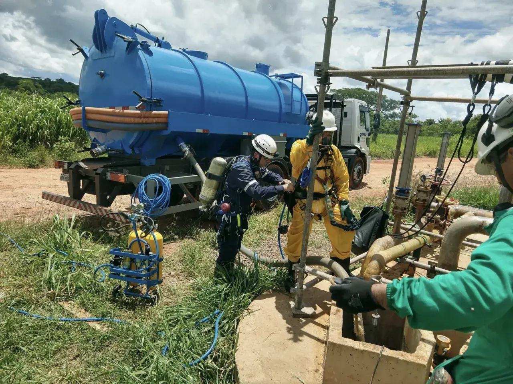
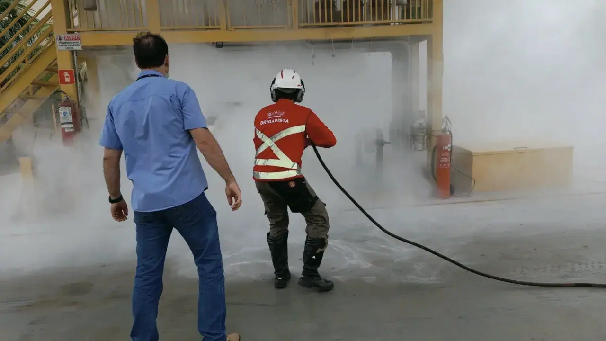
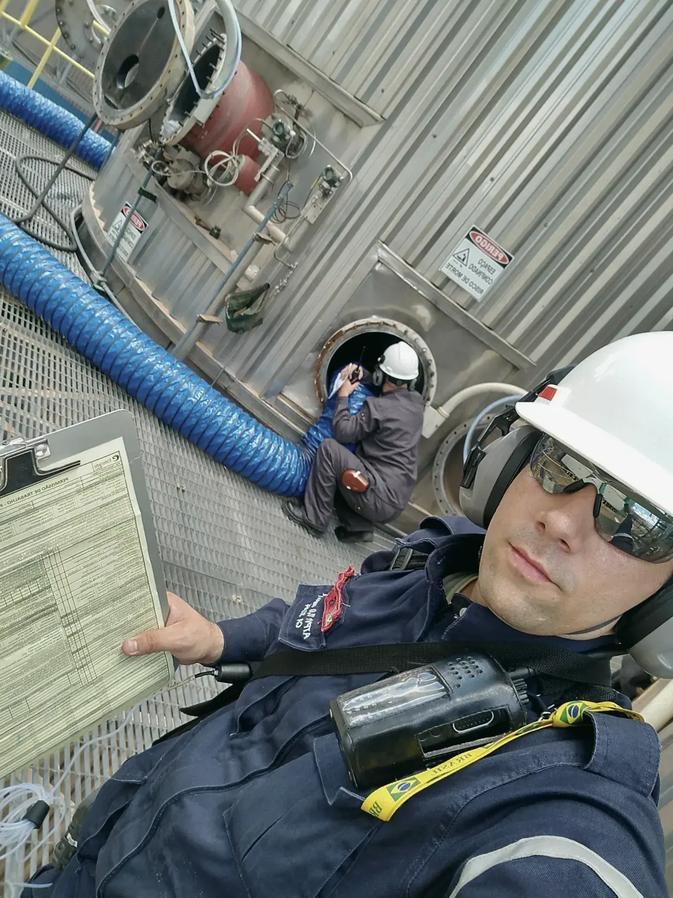
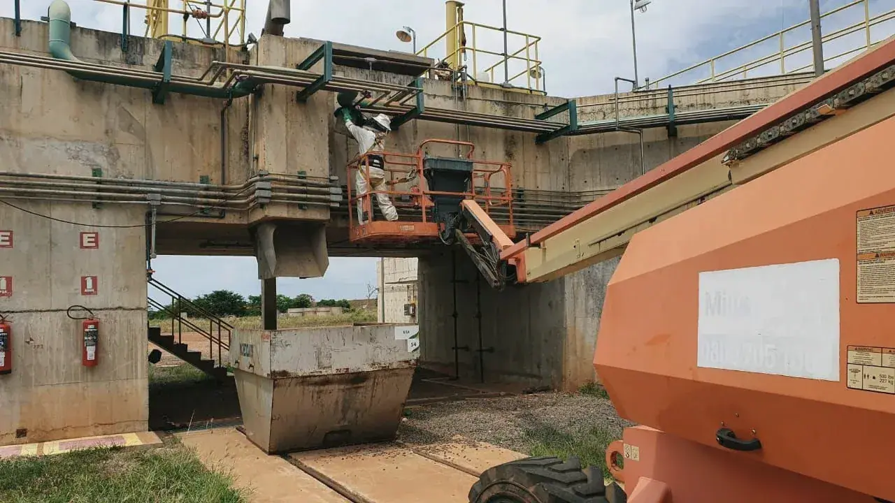
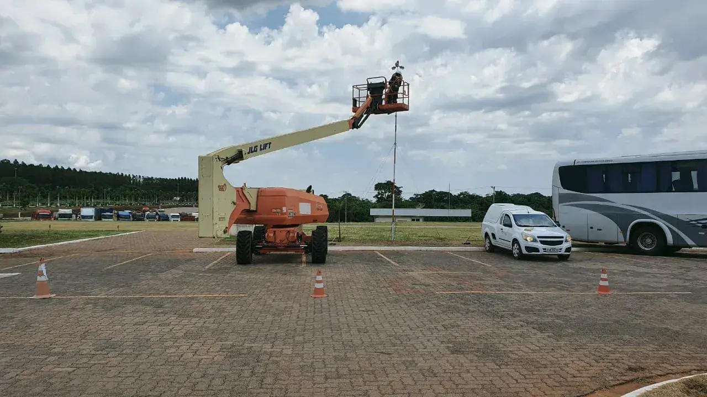
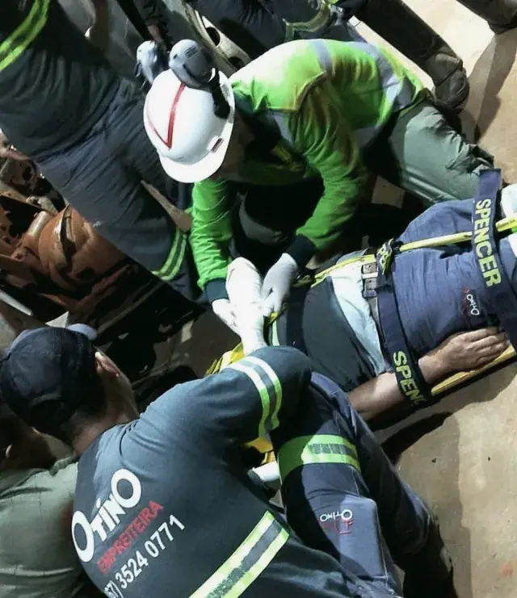
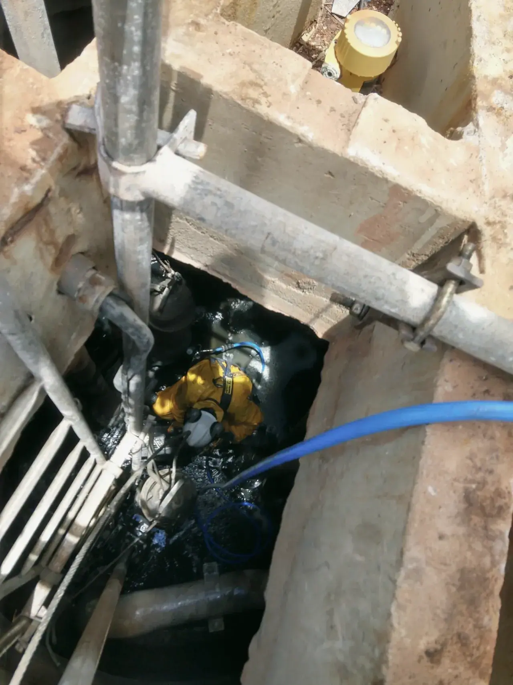
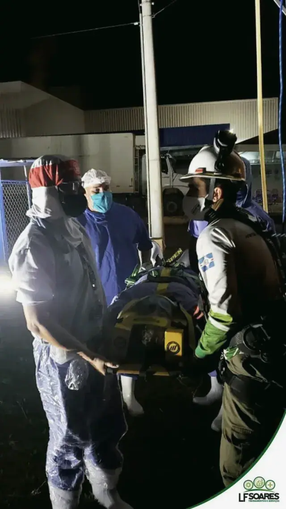
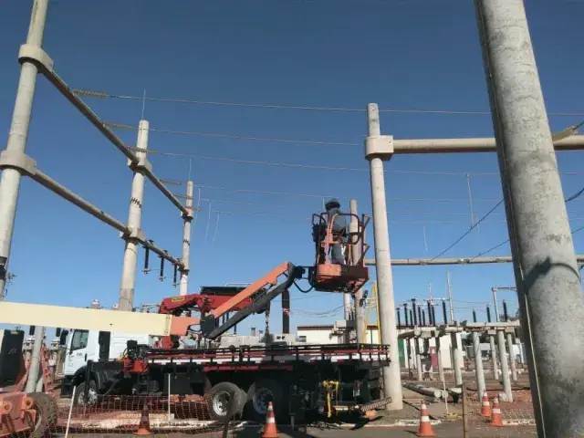

Disponibilidade, Gestão Ativa e Confiabilidade.
Realizamos atendimento personalizado de treinamentos e prestação de serviços conforme o escopo técnico do cliente nas áreas de saúde, segurança e emergência do trabalho. Somos comprometidos com os requisitos legais e prazos acordados, contamos com equipe qualificada e credenciada, atendendo as demandas do cliente através do planejamento estratégico.
Gestão de Pessoas e Serviços em Parada Industrial.
Oferecemos mão de obra especializada para atender paradas de manutenção programada: profissionais especializados, habilitados e autorizados nas áreas de prevenção e emergências do trabalho.

- Técnico em Segurança do Trabalho
- Supervisor de Espaços Confinados e Altura
- Equipe de Resgate
- Bombeiro Profissional Civil
- Vigia de Espaços Confinados
- Brigada de Incêndio
- Operador de Máquinas (Empilhadeiras e PTA)
- Pintor
- Mecânico Industrial
- Pedreiro
- Encanador
- Serralheiro
Elaboração de Documentos Técnicos.
Serviços realizados conforme a realidade de cada cliente, com base em visitas técnicas e conclusão com documentos embasados nas normas vigentes.

- Diagnóstico de Conformidades
- Cadastro de Espaços Confinados
- Formulários de Inspeção de EPI
- Elaboração do PGR / GRO
- Dimensionamento e Nível de Formação da Brigada de Incêndio
- Formulários de Inspeção e Teste de Equipamentos de Controle a Incêndios
- Plano de Atendimento de Emergências — PAE
- Plano de Resgate em Espaços Confinados
- Relatórios de Acompanhamento em Canteiros de Obras
- APR — Análise Preliminar de Riscos
- Checklist de Equipamentos e Maquinários
- Plano de Resgate Industrial
Teste e Manutenção.
Serviço especializado em garantir a avaliação de conformidade de sistemas e equipamentos destinados às áreas de prevenção e respostas emergenciais.

- Detecção e Alarme de Incêndio
- Iluminação de Emergência
- Manutenção de Portas de Emergência
- Troca de Chuveiros Automáticos
- Teste de Funções do Sistema de Controle a Incêndio — Motores, Válvulas, Drenagem
- Sinalização de Emergência
Terceirização de Profissionais e Supervisão de Atividades Críticas.
Serviços desenvolvidos sob a necessidade específica de cada cliente, aplicados na rotina operacional, em pequenas e grandes paradas para manutenção em área fabril.

- Vigia de Espaços Confinados
- Vigilante Contra Incêndio
- Bombeiro Profissional Civil
- Técnico de Segurança do Trabalho
- Resgatista Industrial
- Operador de Máquinas PEMT e Empilhadeira
Atividade por Acesso em Cordas.
Mão de obra qualificada e certificada em acesso por cordas, obedecendo procedimento e norma de segurança para trabalho em altura na execução de inspeções, manutenções, pinturas, solda, limpeza de fachada, revestimento térmico e inventários de evidências.

- Planejamento de Atividade
- Permissão de Serviço
- Sistema de Resgate e Acesso
- Serviço de Solda
- Pintura e Impermeabilização
- Instalação de Linha de Vida
- Acompanhamento de Atividade
- Monitoramento de Atmosfera
- Ventilação
- Montagem de Andaime
- Higienização
Aluguel e Comercialização de Equipamentos.
Vendas, aluguéis e suporte técnico para trabalho em altura e espaços confinados, com atendimento às NR 6, NR 33 e NR 35.

- Cinturão
- Talabarte
- Trava-quedas
- Fita de Ancoragem
- Cordas
- Tripé
- Polias
- Descensores
- Conectores
- Detector de Gás
- Vestimenta para Químicos
Processo de Adequação ao eSocial.
O eSocial é uma plataforma online do governo que unificou a entrega de 15 obrigações da área trabalhista. Contamos com equipe técnica especializada em SST para fornecer atendimento e alimentar o sistema do eSocial.

- S-2210 — Comunicação de Acidente de Trabalho
- S-2220 — Monitoramento da Saúde do Trabalhador
- S-2240 — Condições Ambientais do Trabalho
- Suporte e pronto atendimento às demandas do eSocial
- Elaboração de documentos técnicos e transmissão das informações ao Governo




Conformidade em cada serviço.
A Gestão da Qualidade da LF Soares Treinamentos e Serviços assegura a conformidade dos serviços prestados, referenciando e indicando a utilização de documentos aplicáveis, para atendimento dos requisitos do programa SGQF e da norma ISO 9001 revisão 2015.
Solicite um orçamento.
Envie sua solicitação e, em breve, entraremos em contato com uma proposta técnica.